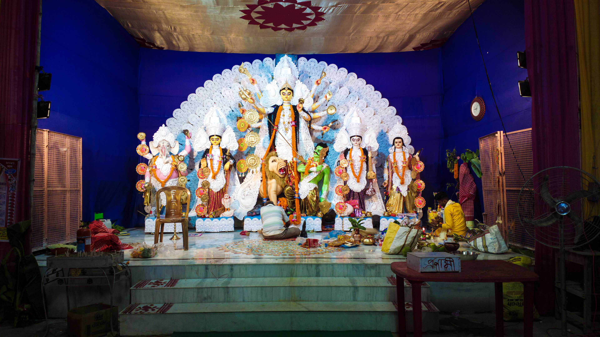
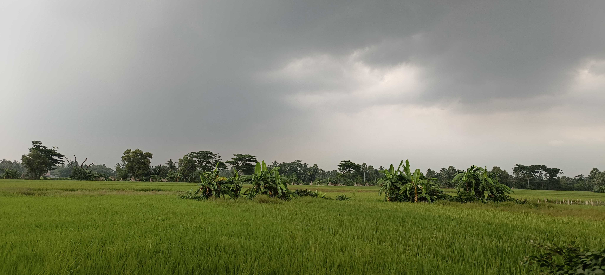
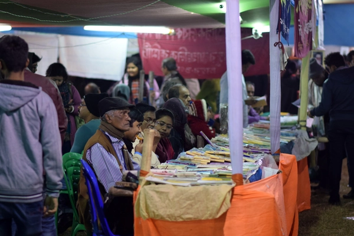
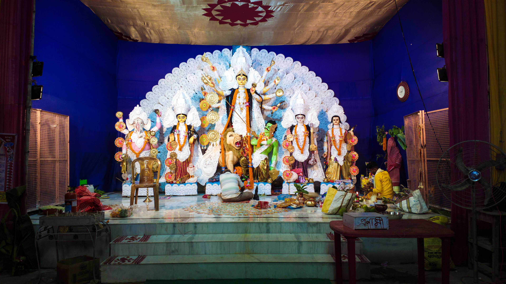
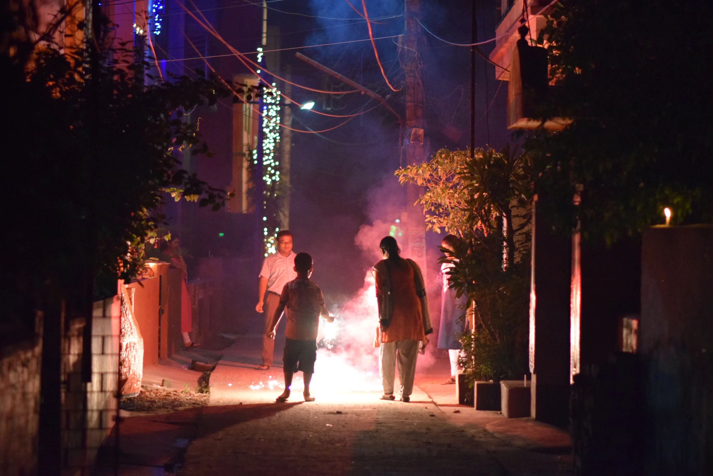

Durga Puja
The grandest celebration, where neighborhoods light up with artistry and devotion.
A peaceful corner of West Bengal, where tradition meets modern aspirations.
A peaceful corner of West Bengal, where tradition meets modern aspirations.
Rich farmlands that continue to feed and sustain the local community.
A place where tradition, resilience, and togetherness shape daily life.
Emerging as a center for education, development, and new opportunities.
Festivals bring people together, filling the town with joy, tradition, and togetherness.
The grandest celebration, where neighborhoods light up with artistry and devotion.
Nights of lights, prayers, and community gatherings.
Showcasing Singur’s agrarian roots, food, and folk traditions.

Discover Singur with insights that go beyond the surface.
I am a frontend developer with a particular interest in making things simple and automating daily tasks. I try to keep up with security and best practices, and am always looking for new things to learn.
Food expert. Music scholar. Reader. Internet fanatic. Bacon buff. Entrepreneur. Travel geek. Pop culture ninja. Coffee fanatic.